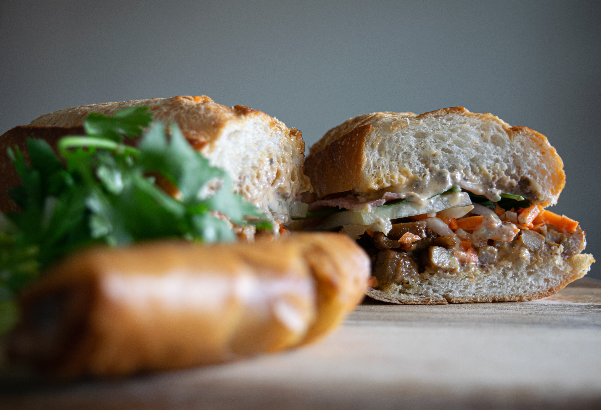

← Back to Recipes
Banh Mi

The Banh Mi sandwich is a delightful Vietnamese sandwich. After the French introduced Vietnam to the baguette, along with other French baked goods, Mr. and Mrs. Le are credited with the creation of the Banh Mi.
Ingredients
- 1/2 cup rice vinegar
- 1/4 cup white sugar
- 1/4 cup water
- 1/4 cup matchstick-cut carrots
- 1/4 cup peeled and matchstick-cut daikon radish
- 1/4 cup thinly sliced white onion
- 1 skinless, boneless chicken breast half
- 1 pinch garlic salt, or to taste
- Ground black pepper to taste
- 1 (12 inch) French baguette
- 4 tablespoons mayonnaise
- 1/4 cup thinly sliced cucumber
- 1 tablespoon fresh cilantro leaves
- 1 small jalapeno pepper, cut into 1/16-inch-thich matchsticks
- 1 wedge lime
Instructions
- Combine rice vinegar, sugar, and water in a saucepan. Bring to a boil over medium heat, stirring until sugar has dissolved, about 1 minute. Allow the mixture to cool.
- Place carrot, radish, and onion in a bowl. Pour in cooled vinegar mixture and let marinate at least 30 minutes.
- While vegetables marinate, set an oven rack about 6 inches from the heat source and preheat the broiler. Lightly oil a slotted broiler pan.
- Sprinkle chicken breast with garlic salt and pepper.
- Place chicken on the prepared pan and broil, turning once, until browned and no longer pink in the center, about 6 minutes per side.
- Place chicken on a cutting board. Cut into bite-sized pieces.
- Slice baguette in half lengthwise. Pull out the soft center of the bread, leaving a cavity for the fillings.
- Lightly toast baguette under the broiler, 2 to 3 minutes.
- Drain off excess vinegar mixture after vegetables have marinated.
- To assemble the sandwich, spread each half of toasted baguette with mayonnaise. Layer chicken on the bottom half of the bread. Top with cucumber, drained pickled vegetables, cilantro, and jalapeno. Squeeze lime wedge over fillings and cover with top half of baguette.
- Cut into two 6-inch sandwiches to serve.